Projeto Solar
Nessa aba iremos falar alguns conceitos sobre o projeto solar sendo feito pela turma de Cibersitemas para automação
Conceitos
Entrada e saída digital
As entradas e saidas são definidas por sinais, que assumem 2 estados, que seria ligado e desligado, geralmente utlizando sinais binários (1 e 2), físico com sensores que medem sinais baixos e altos, e em volts (0V e 5V)
Entrada e saída analógica
Um sinal analógico assume diversos valores, sendo utilizado por exemplo para medir unidades como temperatura, quantidade (em porcentagem).
Microcontroladores
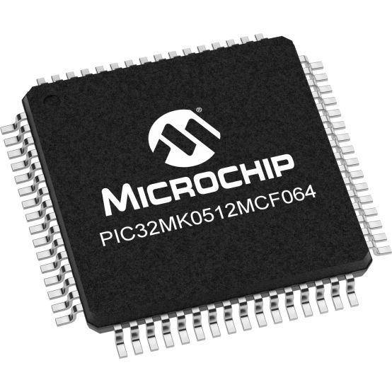
Os microcontroladores são pequenos computadores utilizados para executarem tarefas, executadas por programas que recebem dados de sensores. Ele é um sistema completo em um único chip, com CPU e memória para executar o controle de sistemas expecíficos
Arduíno
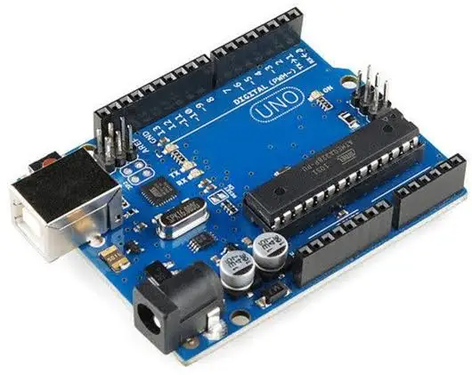
Modelo e fabricante
O modelo que utilizamos é o Arduino Uno, modelo utilizado pra criação de projetos abertos, muito conhecido por ser ideal para iniciantes. O microntrolador desse arduino é produzido pela Atmega, com o ATmega328P ( modelo do microcontrolador )
Programação

O arduino é programado com base na linguagem C ou C++, utilizando o Arduino IDE para escrever e aplicar o código. Sendo estruturados em 2 funções principais, void setup(), void loop(), que iniciam e repetem o que é pedido
Entradas e saídas
O arduino conta com 2 tipos de saídas, analógica e digital, as saídas analógicas são consideradas em valores de 0 a 100, em porcentagem, enquanto as entradas digitais tem valores binários, também definidos em volts, sendo 1 igual a 5 Volts e 0 igual a 0 Volts ( Ou valores menores mas não nulos, assim como 0,1 )
Multímetro
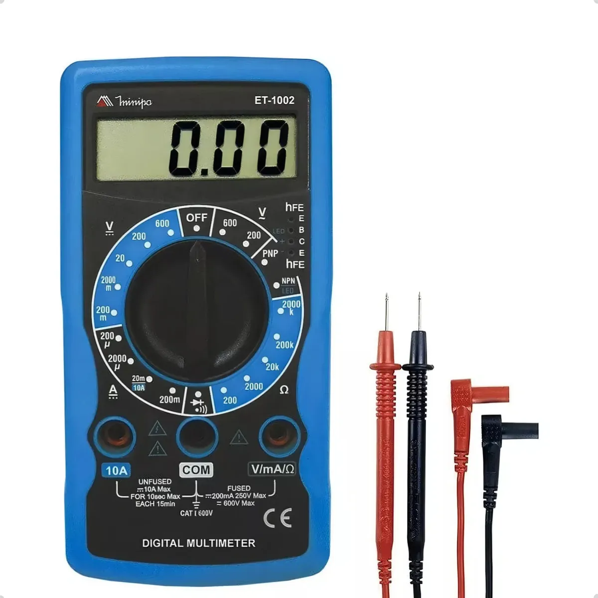
O que é
O multimetro é um aparelho que serve para medir grandezas elétricas, como a resistência, tensão e corrente, é uma ferramente essencial para técnicos que precisam saber desses valores, já que faz a função de 3 aparelhos em 1 só.
Escala
As escalas do multimetro são conjuntos que se ajustam para medir diferentes grandezas elétricas, como a tensão, a corrente e a resistência, onde cada uma possui sub escalas.
Medições e testes
Os testes de um multimetro se baseiam na lei de OHM, que é V = I x R(Tensão é igual a corrente vezes a resistência), para realizar uma medição no multímetro é necessário conectar os cabos no multimetro, selecionar a escala na qual você deseja medir e então tocar as pontas para realizar a medição.
Projeto solar
Ligação eletrônica
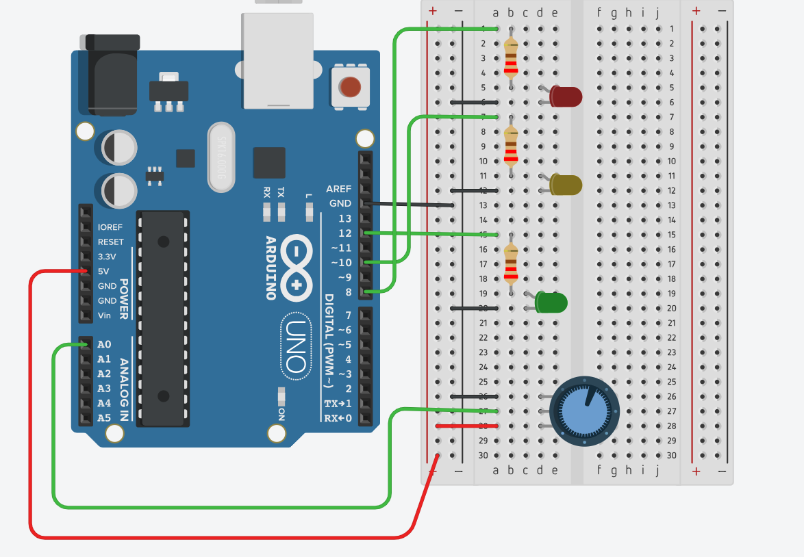
Ligação do arduino para o LED
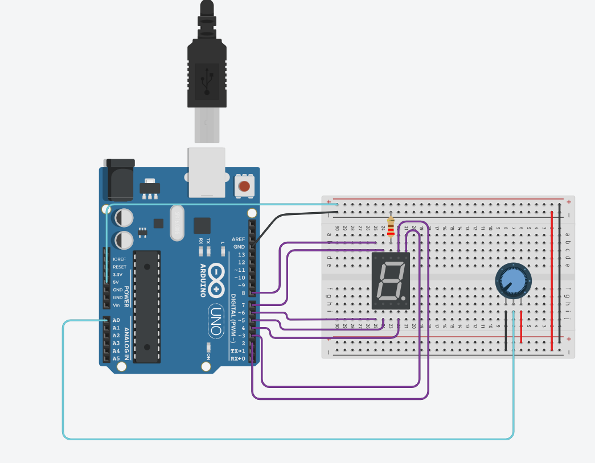 Ligação do arduino para o display de 7 segmentos
Ligação física
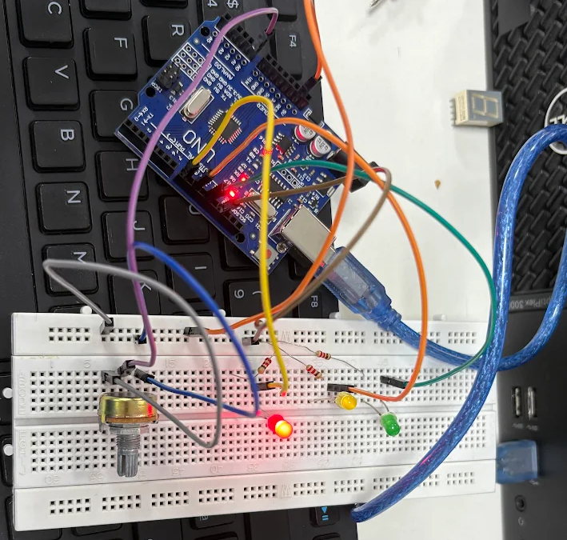 Ligação física do led
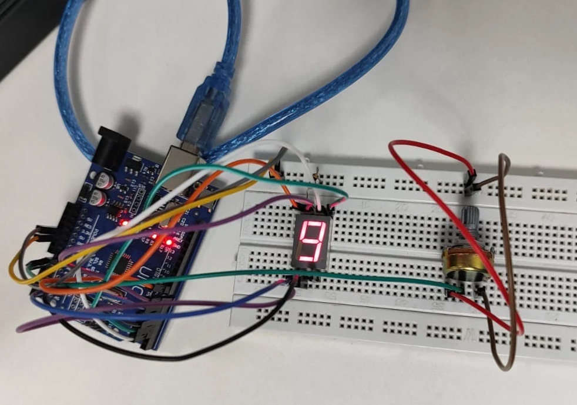 Ligação física do display de 7 segmentos
Códigos C++
Clique aqui para ver os códigos
Códigos
Vídeos das ligações físicas
Video display de 7 segmentos
Video led
Resistência 10k de Ohms
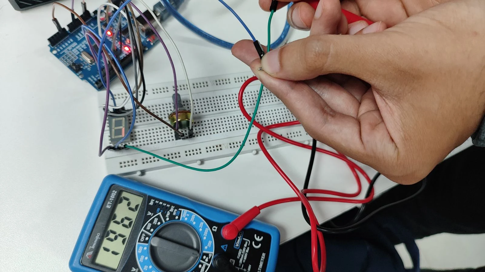
Teste do display
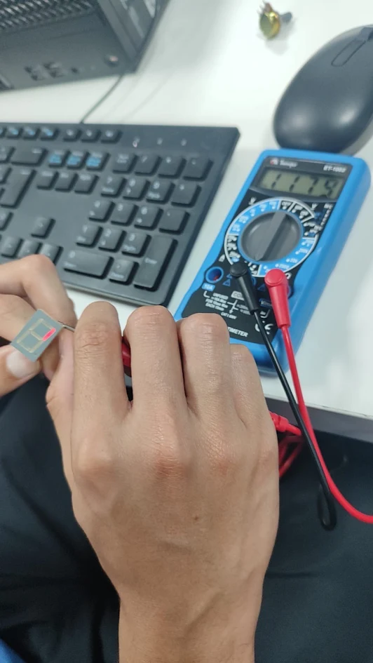
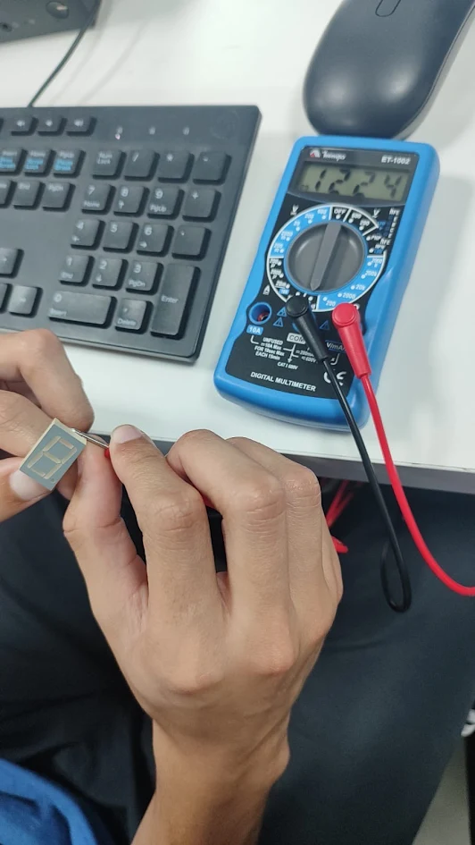
Medidas no monitor
Potênciometro em 700
Display de 7 segmentos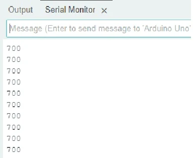
Potênciometro em 300
Ligação de led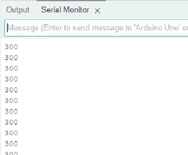
Monitoramento em gráficos
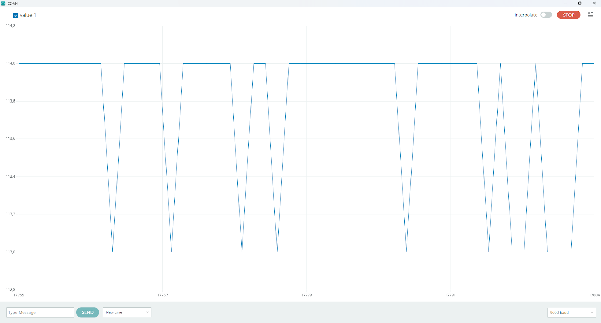
Vídeo
Solid Works
Principais partes
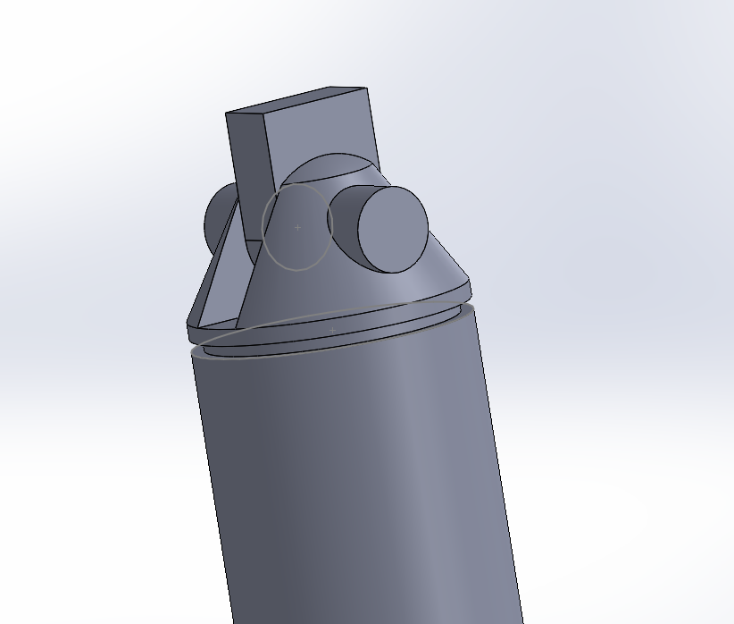
Eixo da placa
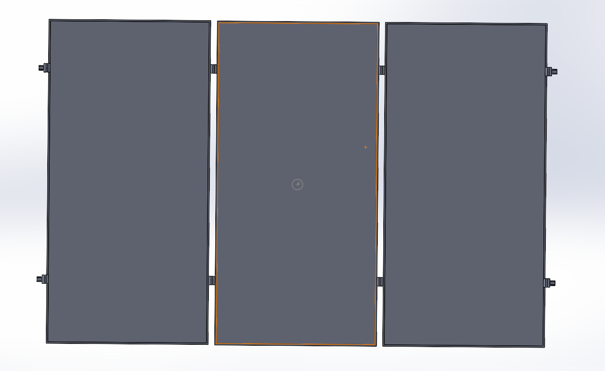
Placa completa
Durante a produção do projeto solar tinhamos que realizar a montagem de uma placa fotovoltaica no solidworks, junto dela realizamos uma estrutura que rotaciona a placas
A placa ela funciona com 2 eixos principais colocados em uma estaca, um eixo na horizontal que roda em 360°, e outro na vertical que gira em 180°, para capturarem todos os movimentos do sol.